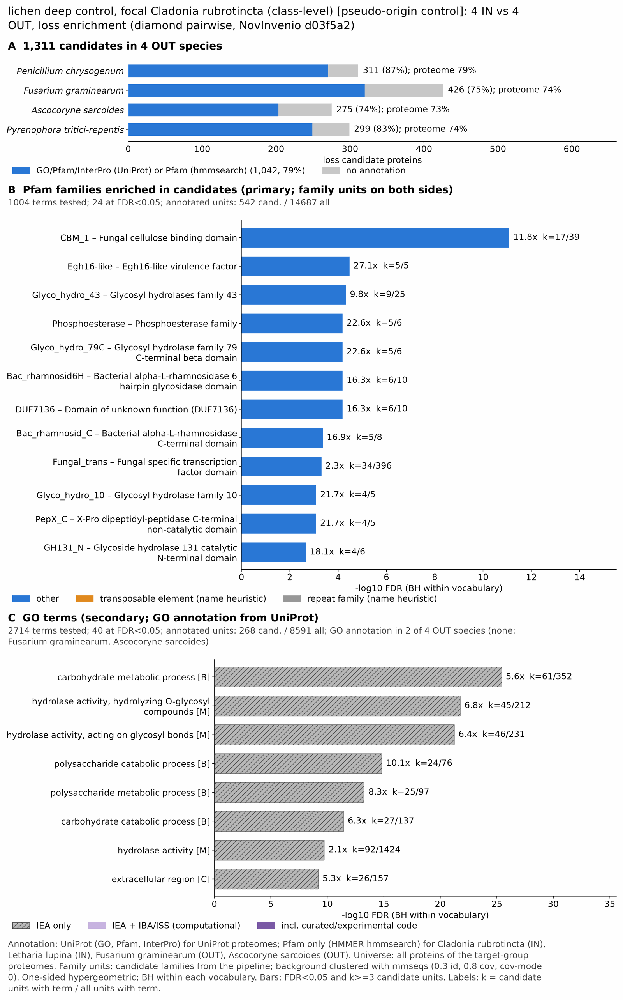

yc pseudo lichen: functional enrichment (loss)
One-sided hypergeometric test per term; Benjamini-Hochberg FDR within each scope, level and vocabulary. Candidates are the loss candidates: gene families present in the OUT group and absent from the IN group. Universe: proteome. Background clustered: True (47644 sequences in 25321 clusters, mmseqs easy-cluster --min-seq-id 0.3 -c 0.8). Family level: one unit per candidate family and per background cluster.
Sources: Pfam: 2026-01-27-Pfam38.2; InterPro entries: 110.0; GO: releases/2026-07-26; analysis generated 2026-10-25T08:49:01. Source tables: /bigdata/stajichlab/jstajich/projects/NovInvenio_Investigations/studies/fungi/yeast_convergence/yc_pseudo_lichen/analysis/enrichment/outputs/loss/proteome_clustered.
Full record: PROVENANCE. Run report: report.html.
Related: yeast_convergence: comparison across contrasts
- Annotation provenance is not fully recorded: PROVENANCE.yaml lists the per-species annotation files and their checksums, but not the UniProt release they come from.
- GO results are secondary. GO annotations include computational evidence (IEA, IBA); the GO evidence column shows if a term has non-IEA support.
- Candidate families (pipeline clustering of candidates) and background clusters (mmseqs clustering of the background proteome) are made by different runs, so family-level counts are not fully comparable.
- Low annotation: the candidate set has less than 50% annotation for InterPro 39.4%, GO 29.0%. Enrichment for these vocabularies has low power.
- GO and InterPro cover only 2 of 4 species: Penichry, Pyretrit. No GO and InterPro annotation for Fusagram, Ascosarc; these species add no units to the GO and InterPro tests, so those results describe the covered species only.
Summary figure

Annotation coverage
Fraction of proteins with at least one term per vocabulary. Universe = all proteins of the species; candidates = the candidate set.
| Species | Set | Proteins | Pfam | Pfam clan | InterPro | GO | Any |
|---|---|---|---|---|---|---|---|
| Penichry | universe | 12232 | 73.5% | 60.9% | 78.6% | 63.9% | 78.8% |
| Penichry | candidates | 311 | 81.3% | 71.4% | 86.8% | 64.0% | 86.8% |
| Fusagram | universe | 12640 | 74.3% | 61.1% | 0.0% | 0.0% | 74.3% |
| Fusagram | candidates | 426 | 75.1% | 65.7% | 0.0% | 0.0% | 75.1% |
| Ascosarc | universe | 10732 | 73.4% | 59.9% | 0.0% | 0.0% | 73.4% |
| Ascosarc | candidates | 275 | 73.8% | 60.0% | 0.0% | 0.0% | 73.8% |
| Pyretrit | universe | 13351 | 68.1% | 55.8% | 73.4% | 59.0% | 73.7% |
| Pyretrit | candidates | 299 | 75.9% | 66.2% | 82.3% | 60.5% | 83.3% |
| ALL_OUT | universe | 48955 | 72.2% | 59.4% | 39.6% | 32.0% | 75.1% |
| ALL_OUT | candidates | 1311 | 76.5% | 66.0% | 39.4% | 29.0% | 79.5% |
Tests summary
Per vocabulary: terms with FDR < 0.05 / terms tested. Protein level counts proteins; family level counts candidate families and background clusters.
| Scope | Level | Cand. units | Pfam sig / tested | Pfam clan sig / tested | InterPro sig / tested | GO sig / tested |
|---|---|---|---|---|---|---|
| whole_set | family | 775 | 24 / 1004 | 17 / 327 | 31 / 1331 | 40 / 2714 |
| whole_set | protein | 1311 | 99 / 2187 | 30 / 439 | 81 / 2416 | 82 / 3536 |
| Ascosarc | family | 248 | 2 / 467 | 5 / 237 | 0 / 0 (not_available_no_annotated_units) | 0 / 0 (not_available_no_annotated_units) |
| Ascosarc | protein | 275 | 6 / 544 | 6 / 249 | 0 / 0 (not_available_no_annotated_units) | 0 / 0 (not_available_no_annotated_units) |
| Fusagram | family | 359 | 2 / 552 | 9 / 253 | 0 / 0 (not_available_no_annotated_units) | 0 / 0 (not_available_no_annotated_units) |
| Fusagram | protein | 426 | 14 / 679 | 14 / 280 | 0 / 0 (not_available_no_annotated_units) | 0 / 0 (not_available_no_annotated_units) |
| Penichry | family | 281 | 0 / 366 | 10 / 246 | 14 / 874 | 29 / 2182 |
| Penichry | protein | 311 | 3 / 508 | 13 / 263 | 19 / 1189 | 30 / 2409 |
| Pyretrit | family | 267 | 3 / 409 | 8 / 252 | 15 / 949 | 30 / 2421 |
| Pyretrit | protein | 299 | 8 / 495 | 10 / 261 | 23 / 1141 | 36 / 2573 |
Top 25 Pfam terms (whole set, family level)
25 rows shown, ordered by FDR then p-value; 24 have FDR < 0.05 (bold).
| Term | Name | k / N cand. | n / M bg | Fold | FDR (BH) |
|---|---|---|---|---|---|
| PF00734 | CBM_1: Fungal cellulose binding domain | 17 / 542 | 39 / 14687 | 11.812 | 8.23e-12 |
| PF11327 | Egh16-like: Egh16-like virulence factor | 5 / 542 | 5 / 14687 | 27.098 | 3.38e-05 |
| PF04616 | Glyco_hydro_43: Glycosyl hydrolases family 43 | 9 / 542 | 25 / 14687 | 9.755 | 4.79e-05 |
| PF04185 | Phosphoesterase: Phosphoesterase family | 5 / 542 | 6 / 14687 | 22.581 | 6.52e-05 |
| PF16862 | Glyco_hydro_79C: Glycosyl hydrolase family 79 C-terminal beta domain | 5 / 542 | 6 / 14687 | 22.581 | 6.52e-05 |
| PF17389 | Bac_rhamnosid6H: Bacterial alpha-L-rhamnosidase 6 hairpin glycosidase domain | 6 / 542 | 10 / 14687 | 16.259 | 6.52e-05 |
| PF23584 | DUF7136: Domain of unknown function (DUF7136) | 6 / 542 | 10 / 14687 | 16.259 | 6.52e-05 |
| PF17390 | Bac_rhamnosid_C: Bacterial alpha-L-rhamnosidase C-terminal domain | 5 / 542 | 8 / 14687 | 16.936 | 4.31e-04 |
| PF04082 | Fungal_trans: Fungal specific transcription factor domain | 34 / 542 | 396 / 14687 | 2.327 | 4.89e-04 |
| PF00331 | Glyco_hydro_10: Glycosyl hydrolase family 10 | 4 / 542 | 5 / 14687 | 21.678 | 8.13e-04 |
| PF08530 | PepX_C: X-Pro dipeptidyl-peptidase C-terminal non-catalytic domain | 4 / 542 | 5 / 14687 | 21.678 | 8.13e-04 |
| PF18271 | GH131_N: Glycoside hydrolase 131 catalytic N-terminal domain | 4 / 542 | 6 / 14687 | 18.065 | 0.002 |
| PF11951 | Fungal_trans_2: Fungal specific transcription factor domain | 21 / 542 | 219 / 14687 | 2.598 | 0.005 |
| PF02129 | Peptidase_S15: X-Pro dipeptidyl-peptidase (S15 family) | 4 / 542 | 10 / 14687 | 10.839 | 0.019 |
| PF07876 | Dabb: Stress responsive A/B Barrel Domain | 4 / 542 | 10 / 14687 | 10.839 | 0.019 |
| PF08881 | CVNH: CVNH domain | 4 / 542 | 10 / 14687 | 10.839 | 0.019 |
| PF13640 | 2OG-FeII_Oxy_3: 2OG-Fe(II) oxygenase superfamily | 4 / 542 | 10 / 14687 | 10.839 | 0.019 |
| PF01182 | Glucosamine_iso: Glucosamine-6-phosphate isomerases/6-phosphogluconolactonase | 3 / 542 | 5 / 14687 | 16.259 | 0.023 |
| PF06330 | TRI5: Trichodiene synthase (TRI5) | 3 / 542 | 5 / 14687 | 16.259 | 0.023 |
| PF14683 | CBM-like: Polysaccharide lyase family 4, domain III | 3 / 542 | 5 / 14687 | 16.259 | 0.023 |
| PF14686 | fn3_3: Polysaccharide lyase family 4, domain II | 3 / 542 | 5 / 14687 | 16.259 | 0.023 |
| PF01083 | Cutinase: Cutinase | 5 / 542 | 20 / 14687 | 6.774 | 0.030 |
| PF00703 | Glyco_hydro_2: Glycosyl hydrolases family 2 | 4 / 542 | 12 / 14687 | 9.033 | 0.031 |
| PF13578 | Methyltransf_24: Methyltransferase domain | 3 / 542 | 6 / 14687 | 13.549 | 0.038 |
| PF00251 | Glyco_hydro_32N: Glycosyl hydrolases family 32 N-terminal domain | 3 / 542 | 7 / 14687 | 11.613 | 0.057 |
Top 25 InterPro terms (whole set, family level)
25 rows shown, ordered by FDR then p-value; 25 have FDR < 0.05 (bold).
| Term | Name | k / N cand. | n / M bg | Fold | FDR (BH) |
|---|---|---|---|---|---|
| IPR017853 | Homologous_superfamily:Glycoside hydrolase superfamily | 25 / 367 | 121 / 11278 | 6.349 | 1.16e-10 |
| IPR023296 | Homologous_superfamily:Glycosyl hydrolase, five-bladed beta-propeller domain superfamily | 12 / 367 | 25 / 11278 | 14.751 | 2.79e-09 |
| IPR008979 | Homologous_superfamily:Galactose-binding-like domain superfamily | 13 / 367 | 42 / 11278 | 9.512 | 1.79e-07 |
| IPR012341 | Homologous_superfamily:Six-hairpin glycosidase-like superfamily | 12 / 367 | 36 / 11278 | 10.243 | 2.43e-07 |
| IPR008928 | Homologous_superfamily:Six-hairpin glycosidase superfamily | 12 / 367 | 37 / 11278 | 9.967 | 2.79e-07 |
| IPR013780 | Homologous_superfamily:Glycosyl hydrolase, all-beta | 9 / 367 | 29 / 11278 | 9.537 | 4.63e-05 |
| IPR006710 | Family:Glycoside hydrolase, family 43 | 7 / 367 | 17 / 11278 | 12.654 | 1.02e-04 |
| IPR012334 | Homologous_superfamily:Pectin lyase fold | 7 / 367 | 19 / 11278 | 11.322 | 2.18e-04 |
| IPR011050 | Homologous_superfamily:Pectin lyase fold/virulence factor | 7 / 367 | 20 / 11278 | 10.756 | 2.90e-04 |
| IPR000383 | Domain:Xaa-Pro dipeptidyl-peptidase-like domain | 4 / 367 | 5 / 11278 | 24.584 | 5.50e-04 |
| IPR007312 | Family:Phospholipase C-like | 4 / 367 | 5 / 11278 | 24.584 | 5.50e-04 |
| IPR031728 | Domain:Beta-glucuronidase, C-terminal | 4 / 367 | 5 / 11278 | 24.584 | 5.50e-04 |
| IPR052974 | Family:Glycosyl Hydrolase 79 Enzymes | 4 / 367 | 5 / 11278 | 24.584 | 5.50e-04 |
| IPR029058 | Homologous_superfamily:Alpha/Beta hydrolase fold | 22 / 367 | 249 / 11278 | 2.715 | 0.002 |
| IPR017850 | Homologous_superfamily:Alkaline-phosphatase-like, core domain superfamily | 6 / 367 | 20 / 11278 | 9.219 | 0.003 |
| IPR021858 | Family:Fungal transcription factor | 13 / 367 | 106 / 11278 | 3.769 | 0.003 |
| IPR013320 | Homologous_superfamily:Concanavalin A-like lectin/glucanase domain superfamily | 8 / 367 | 43 / 11278 | 5.717 | 0.005 |
| IPR000254 | Domain:Cellulose-binding domain | 5 / 367 | 15 / 11278 | 10.243 | 0.006 |
| IPR035971 | Homologous_superfamily:Cellulose-binding domain superfamily | 5 / 367 | 15 / 11278 | 10.243 | 0.006 |
| IPR013830 | Domain:SGNH hydrolase-type esterase domain | 4 / 367 | 10 / 11278 | 12.292 | 0.013 |
| IPR013783 | Homologous_superfamily:Immunoglobulin-like fold | 8 / 367 | 51 / 11278 | 4.82 | 0.014 |
| IPR001138 | Domain:Zn(2)Cys(6) fungal-type DNA-binding domain | 23 / 367 | 314 / 11278 | 2.251 | 0.015 |
| IPR011058 | Domain:Cyanovirin-N | 3 / 367 | 5 / 11278 | 18.438 | 0.017 |
| IPR036673 | Homologous_superfamily:Cyanovirin-N superfamily | 3 / 367 | 5 / 11278 | 18.438 | 0.017 |
| IPR041524 | Domain:Glycoside hydrolase 131, catalytic N-terminal | 3 / 367 | 5 / 11278 | 18.438 | 0.017 |
Top 15 GO terms (whole set, family level) — secondary, computational evidence (IEA/IBA) included
15 rows shown, ordered by FDR then p-value; 15 have FDR < 0.05 (bold).
| Term | Name | k / N cand. | n / M bg | Fold | FDR (BH) | GO evidence | Families with non-IEA |
|---|---|---|---|---|---|---|---|
| GO:0005975 | biological_process:carbohydrate metabolic process | 61 / 268 | 352 / 8591 | 5.555 | 3.79e-26 | IEA_only | 0 |
| GO:0004553 | molecular_function:hydrolase activity, hydrolyzing O-glycosyl compounds | 45 / 268 | 212 / 8591 | 6.804 | 1.75e-22 | IEA_only | 0 |
| GO:0016798 | molecular_function:hydrolase activity, acting on glycosyl bonds | 46 / 268 | 231 / 8591 | 6.383 | 5.81e-22 | IEA_only | 0 |
| GO:0000272 | biological_process:polysaccharide catabolic process | 24 / 268 | 76 / 8591 | 10.123 | 1.55e-15 | IEA_only | 0 |
| GO:0005976 | biological_process:polysaccharide metabolic process | 25 / 268 | 97 / 8591 | 8.262 | 5.48e-14 | IEA_only | 0 |
| GO:0016052 | biological_process:carbohydrate catabolic process | 27 / 268 | 137 / 8591 | 6.318 | 3.70e-12 | IEA_only | 0 |
| GO:0016787 | molecular_function:hydrolase activity | 92 / 268 | 1424 / 8591 | 2.071 | 1.87e-10 | IEA_only | 0 |
| GO:0005576 | cellular_component:extracellular region | 26 / 268 | 157 / 8591 | 5.309 | 6.43e-10 | IEA_only | 0 |
| GO:0003700 | molecular_function:DNA-binding transcription factor activity | 47 / 268 | 549 / 8591 | 2.744 | 4.17e-08 | IEA_only | 0 |
| GO:0045491 | biological_process:xylan metabolic process | 7 / 268 | 8 / 8591 | 28.049 | 4.69e-08 | IEA_only | 0 |
| GO:0045493 | biological_process:xylan catabolic process | 7 / 268 | 8 / 8591 | 28.049 | 4.69e-08 | IEA_only | 0 |
| GO:2000895 | biological_process:hemicellulose catabolic process | 7 / 268 | 8 / 8591 | 28.049 | 4.69e-08 | IEA_only | 0 |
| GO:0046373 | biological_process:L-arabinose metabolic process | 6 / 268 | 6 / 8591 | 32.056 | 1.82e-07 | IEA_only | 0 |
| GO:0019566 | biological_process:arabinose metabolic process | 6 / 268 | 7 / 8591 | 27.477 | 1.08e-06 | IEA_only | 0 |
| GO:0046556 | molecular_function:alpha-L-arabinofuranosidase activity | 6 / 268 | 7 / 8591 | 27.477 | 1.08e-06 | IEA_only | 0 |
Actin cytoskeleton controls
Known actin-related families and how many of their proteins pass each filter. Protein ID columns are left out.
| control | pfam_ids | desc_regex | OUT_universe | OUT_in_matrix | OUT_pass_outgroup_rule | candidates | near_miss_in1 | near_miss_in2 | n_Penichry | n_Fusagram | n_Ascosarc | n_Pyretrit | n_Cladrubr | n_Xantpari | n_Umbipust | n_Lethlupi |
|---|---|---|---|---|---|---|---|---|---|---|---|---|---|---|---|---|
| Arp2/3 ARPC2 (P34-Arc) | PF04045 | 4 | 4 | 4 | 0 | 0 | 0 | 1 | 1 | 1 | 1 | 1 | 1 | 1 | 1 | |
| Arp2/3 ARPC3 (P21-Arc) | PF04062 | 4 | 4 | 4 | 0 | 0 | 0 | 1 | 1 | 1 | 1 | 1 | 1 | 1 | 1 | |
| Arp2/3 ARPC4 | PF05856 | 4 | 4 | 4 | 0 | 0 | 0 | 1 | 1 | 1 | 1 | 1 | 1 | 1 | 1 | |
| Arp2/3 ARPC5 (P16-Arc) | PF04699 | 4 | 4 | 4 | 0 | 0 | 0 | 1 | 1 | 1 | 1 | 1 | 1 | 1 | 1 | |
| Arp2/3 ARPC1 (description only) | arp2/3 complex.*(41|p41|subunit 1)|ARPC1 | 0 | 0 | 0 | 0 | 0 | 0 | 0 | 0 | 0 | 0 | 0 | 0 | 0 | 0 | |
| Arp2 / Arp3 (description only) | actin-related protein (2|3)\b|\bARP[23]\b | 10 | 10 | 10 | 0 | 0 | 0 | 5 | 0 | 0 | 5 | 0 | 7 | 6 | 0 | |
| WAVE complex NCKAP1 | PF09735 | 0 | 0 | 0 | 0 | 0 | 0 | 0 | 0 | 0 | 0 | 0 | 0 | 0 | 0 | |
| WAVE complex CYFIP (FragX_IP) | PF05994 | 0 | 0 | 0 | 0 | 0 | 0 | 0 | 0 | 0 | 0 | 0 | 0 | 0 | 0 | |
| WAVE complex ABI | PF07815|PF27594 | 0 | 0 | 0 | 0 | 0 | 0 | 0 | 0 | 0 | 0 | 0 | 0 | 0 | 0 | |
| SCAR/WAVE (SCAR_helical) | PF27569 | 0 | 0 | 0 | 0 | 0 | 0 | 0 | 0 | 0 | 0 | 0 | 0 | 0 | 0 | |
| WASP family (WH1) | PF00568 | 4 | 4 | 4 | 0 | 0 | 0 | 1 | 1 | 1 | 1 | 1 | 1 | 1 | 1 | |
| WH2 motif (WASP, WAVE, others) | PF02205 | 7 | 7 | 7 | 0 | 0 | 0 | 1 | 2 | 1 | 3 | 2 | 1 | 0 | 2 | |
| Formin FH2 | PF02181 | 4 | 4 | 4 | 0 | 0 | 0 | 1 | 1 | 1 | 1 | 1 | 1 | 1 | 1 | |
| Formin Drf_GBD / Drf_FH3 / Drf_DAD | PF06371|PF06367|PF06345 | 8 | 8 | 8 | 0 | 0 | 0 | 2 | 2 | 2 | 2 | 2 | 1 | 2 | 2 | |
| Ena/VASP (VASP_tetra) | PF08776 | 0 | 0 | 0 | 0 | 0 | 0 | 0 | 0 | 0 | 0 | 0 | 0 | 0 | 0 | |
| Coronin (description only) | coronin | 2 | 2 | 2 | 0 | 0 | 0 | 1 | 0 | 0 | 1 | 0 | 1 | 0 | 0 | |
| Cortactin (HS1_rep) | PF02218 | 0 | 0 | 0 | 0 | 0 | 0 | 0 | 0 | 0 | 0 | 0 | 0 | 0 | 0 | |
| Myosin 2 tail (Myosin_tail_1) | PF01576 | 0 | 0 | 0 | 0 | 0 | 0 | 0 | 0 | 0 | 0 | 0 | 0 | 0 | 0 | |
| Myosin head (all myosins) | PF00063 | 16 | 16 | 16 | 0 | 0 | 0 | 4 | 4 | 4 | 4 | 4 | 4 | 4 | 4 |
Page written by bin/generate_enrichment_page.py.